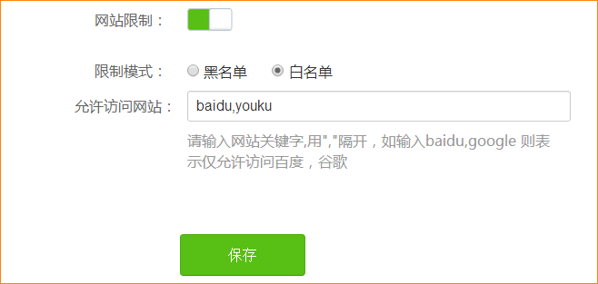

Tenda WiFi App 快问快答——家长控制、远程重启、AI 语音一次讲清
Tenda WiFi App 到底能干嘛、怎么装、家长控制和 AI 语音是不是噱头、访客网络连不上怎么办，八个问题把这款路由器管理 App 一次说透。
整理一篇关于 Tenda WiFi App 的快问快答，把大家最常搜、最关心的问题一次说清——从"这东西该不该装"到"连不上怎么办"，每个问题都给你直接能用的答案。
Tenda WiFi App 是干嘛的？
一句话：tendawifi app官网上介绍得很清楚——腾达路由器的手机管理客户端，让你不用蹲在电脑浏览器里输地址，拿手机就能管家里的 Wi-Fi、设备、家长控制这些事。传统的路由器管理靠浏览器打开 192.168 开头的地址，界面老、操作慢、出门在外还访问不到；它把这些搬到了手机上，加了云端远程访问、AI 语音助手这些新能力，本质上就是给腾达路由器做了一层现代化的手机入口。
谁需要装这个 App？
腾达路由器用户基本都值得装。尤其是这几类人：家里有小孩要做家长控制的、经常有客人来需要开访客网络的、人在外地想远程看看家里网络状态的、Mesh 组网多台路由器要统一管理的。如果你用的不是腾达路由器，那这 App 用不了——它只绑定腾达自家的硬件。
怎么安装和绑定路由器？
官方下载可以直接从应用商店搜 Tenda WiFi，或者从下载页拿安装包。装好后打开会引导你注册登录。绑定路由器的关键一步是手机要先连上要绑定的那台路由器的 Wi-Fi，App 会自动发现附近的腾达设备，点一下确认就绑上了。绑定成功之后，不管你在家里还是外面，只要手机有网就能远程管理。如果换了路由器或者二手路由器需要解绑，在 App 里进设备详情找解绑选项就行，旧主人不解绑的话新主人绑定不了，这也是腾达的安全设计。

家长控制具体能做些什么？
Tenda WiFi App 的家长控制主要分两块：时间限制和网址过滤。时间限制可以按天设置哪些时间段允许上网，比如工作日晚上只能七点到九点玩平板，周末可以放宽到全天；还能按设备单独设，老大和老二的平板可以有不同的规则。网址过滤则有黑白名单两种模式——黑名单就是不让上的网站加进去，其他都放行，适合日常屏蔽赌博、色情、诈骗这些明显不良的站点；白名单反过来，只允许名单里的网站，其他全站封锁，给很小的孩子用平板时这个模式更狠。

几个实操细节：网址过滤只需要输主域名（比如 baidu.com），不用加 www 或 https；HTTPS 加密网站在旧机型上可能拦不完全，新路由器效果更好；另外，域名过滤对抖音、微信这种用 IP 直连的内置 App 不一定覆盖得了，配合时间限制一起用更靠谱。更多设置细节可以翻一下tendawifi app文档。
AI 语音控制是噱头还是真好用？
不是噱头，但也不是万能的。AI 语音控制本质上是给 App 的各项操作套了一层自然语言入口——手动设置能做的事，语音基本都能触发；但语音做不了的，手动也未必做得了，底层还是同一套路由器参数。实际用下来，家长控制和访客网络这两个场景语音最顺手：想临时断孩子平板的网、想开六小时访客 Wi-Fi、想查家里现在有多少设备在线，说一句就行，比打开 App 层层点快得多。
技巧上，给家里的设备起个好认的名字很重要——别全叫"Android-xxxx"，改成"老大的平板""书房的笔记本"，AI 助手识别起来准得多。多台路由器的话指令里加上位置，比如"让书房的路由器开访客网络"，AI 才知道你说的是哪台。复杂操作一次没听懂就拆开说，分几步说反而成功率更高。
远程重启路由器靠谱吗？
靠谱，而且是我觉得这个 App 最实用的功能之一。路由器长时间运行偶尔会卡——Wi-Fi 变慢、某些设备连不上、App 显示在线但改不了设置，这些时候不用跑一趟路由器旁边按电源键，手机上点一下重启就行，三十到六十秒搞定。只要手机有网，不管你在公司、楼下还是出差在外，都能远程重启家里的路由器。
另外还有个容易忽略的小功能：面板灯开关。路由器前面板的指示灯晚上睡觉特别刺眼，特别是放在卧室或客厅的。App 里可以直接关掉，部分机型还支持定时——晚上十点自动灭灯、早上七点自动亮，睡觉不晃眼，白天又能看状态。
访客网络连不上怎么回事？
排查思路按现象分三种情况。搜不到访客 Wi-Fi：先回 App 确认访客网络开关真的打开了，保存后等十秒再让设备扫描；如果主 Wi-Fi 设了隐藏 SSID，访客网络可能也跟着隐藏了；主 Wi-Fi 名称里有特殊字符也可能导致兼容问题。连上去但没网：先确认主网络自己能不能上网——主网络也没网那是宽带或光猫的问题，跟访客网络无关；再检查访客网络的有效期是不是过期了，设了有效期的话到期会自动关掉；还有看看是不是加了访问限制，临时关掉试试。连接不稳定：访客网络默认在 2.4GHz，这个频段容易受干扰，切到 5GHz 试试；也可以在 App 里关了访客网络等十秒再开，相当于刷新一遍参数。
几个常见误区：访客网络有自己独立的密码，不是主网络密码，分享的时候别给错了；有效期到了会自动关闭，这是安全设计，忘了续的话客人就上不了。
有没有什么坑要注意？
有几个容易踩的点提一下。第一，恢复出厂会清零所有配置，如果路由器有云端绑定的话恢复出厂前先确认有没有备份，不然绑定关系也会断。第二，部分旧机型对 HTTPS 加密网站的网址过滤拦截不完全，用家长控制的话建议尽量用近两年的腾达路由器。第三，域名过滤对走移动数据流量的设备无效——它管的是经过路由器的流量，孩子用自己手机的 4G/5G 上网你拦不住，这个要搞清楚边界。第四，App 的远程管理需要路由器保持云端在线，如果路由器被手动断网或者固件有 bug 掉线了，远程也就访问不到了，还是得本地重启。
Tenda WiFi App 把腾达路由器的管理体验从"蹲电脑输地址"升级到了"手机随手管"，家长控制、远程重启、AI 语音这几个核心功能都是真能用的实用功能——腾达路由器用户装一个，值。